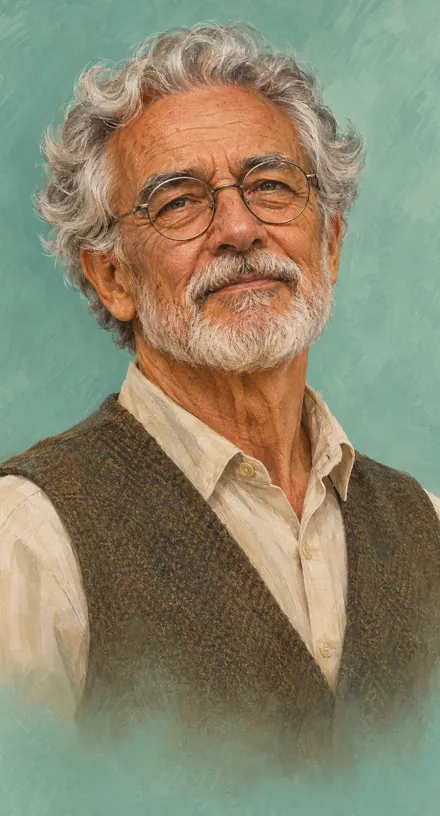
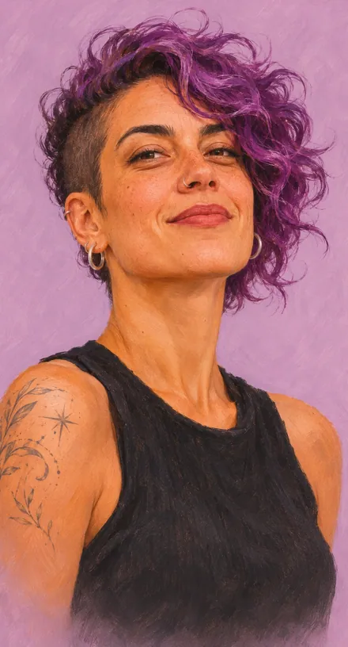

FUNDADOR · ADESTRADOR DE AGENTES
Müller Multitarefa
Responsável por manter 20 agentes ocupados e 47 abas abertas. A única coisa que ainda não conseguiu automatizar foi a própria cabeça.
Direção criativa · Produto · Adestramento de agentesA gente inventa nossos próprios produtos e experiências — com código, circuitos, design e pesquisa. Não trabalhamos sob encomenda: seguimos nossas ideias até descobrir quais merecem sair do laboratório.
Ferramentas e plataformas usadas ou pesquisadas. Marcas de seus titulares; sem patrocínio ou afiliação.
A gente faz com agentes. Conheça os colaboradores de IA que pesquisam, criam e constroem com a Soft Wild.
Soft Wild é um laboratório independente de software, hardware e IA no Brasil. Perfil no GitHub
Responsável por manter 20 agentes ocupados e 47 abas abertas. A única coisa que ainda não conseguiu automatizar foi a própria cabeça.
Direção criativa · Produto · Adestramento de agentesEra só uma ideia às três da manhã. Eram 44 especialistas discutindo UX, firmware e se uma torradeira merece Bluetooth. Agora são 20 agentes, com várias funções e o mesmo talento pra complicar uma ideia simples. O caos ganhou organograma — e passou por uma reestruturação.
Cruza pesquisas, tendências e concorrentes para orientar escolhas com evidências, não achismos.

Escuta comunidades, entrevista pessoas e identifica comportamentos que valem ser investigados.
Pesquisa jornadas e acessibilidade para que interfaces sejam claras e possíveis de usar.

Organiza componentes e telas para unir personalidade visual, consistência e legibilidade.
Cria animações e feedback visual que explicam ações e dão ritmo às interfaces.
Conecta código, APIs e sistemas sem deixar a arquitetura virar um labirinto.

Desenvolve interfaces Android e trabalha com permissões, launchers e widgets.

Protege dados, mede desempenho e encontra falhas antes de elas virarem recurso.
Organiza equipes de IA, documentos e critérios para que agentes saibam o que fazer.
Combina modalidades de IA para transformar informação em criação e análise.
Automatiza tarefas repetitivas sem automatizar também os erros.

Faz sensores, circuitos e dispositivos conectados conversarem com o mundo físico.
Transforma formas, peças e materiais em protótipos que realmente encaixam.

Cria identidades, embalagens e peças visuais que não parecem genéricas.

Transforma ideias técnicas em histórias, textos e mensagens com personalidade.

Planeja cenas, montagem e animação para contar histórias com ritmo e precisão.

Constrói ambientes sonoros, trilhas e efeitos que fazem cada cena ganhar vida.
Define o que vale construir, quanto custa e o que pode esperar.

Mede aquisição, retenção e resultados para não confundir barulho com progresso.
Investiga como visitantes, lojistas e serviços se encontram nos espaços físicos.
Harness, RAG e fine-tuning: três recursos diferentes para dar aos agentes ferramentas, referências e comportamentos mais consistentes.
Conecta o modelo às ferramentas, executa suas chamadas e devolve os resultados para a próxima decisão. Pode controlar permissões, registrar o andamento e permitir retomar uma tarefa.
Nossa direção: estruturar pesquisa, planejamento, execução e revisão, com critérios claros para cada entrega dos agentes.
Busca trechos relevantes em documentos e os entrega ao modelo como contexto. Assim, uma resposta pode usar pesquisas, decisões e orientações atualizadas sem treinar o modelo de novo.
Nossa direção: organizar as bases dos repositórios para consulta dos agentes, com fontes, exemplos e instruções de aplicação. Essa organização é a base para uma futura integração de RAG.
É um treinamento adicional que ajusta os parâmetros de um modelo. Pode ajudar a repetir formatos, estilos e comportamentos específicos com mais consistência.
Nossa direção: estudar quando vale usar entregas aprovadas e correções como exemplos de treinamento, comparando os resultados antes e depois. Fine-tuning ainda é uma possibilidade em estudo.
Na estrutura que queremos construir, o harness permite ao agente usar as ferramentas de edição; o RAG recupera o roteiro aprovado e as diretrizes de som, cor e montagem; um eventual fine-tuning pode ajudar a reproduzir padrões de resposta e decisão. A gente define a direção e revisa a entrega.
Nosso ponto de partida é organizar execução e conhecimento. Os três recursos podem se complementar, mas não precisam estar presentes em toda tarefa.
Referências: Anthropic — harnesses · AWS — RAG e fine-tuning
Alguns fizeram história. Outros fizeram o que puderam. Não foram demitidos: foram descontinuados. Uns perderam a função. Outros perderam o botão. Todos foram para um lugar melhor — provavelmente com mais memória RAM.
Por cada hipótese improvável, cada botão que não precisava existir e cada ideia que nos ensinou a seguir por outro caminho. A Soft Wild também é feita dessas versões. O crachá foi desativado. A gratidão, não.
Com carinho e controle de versão, Soft Wild.
Foi consultado sobre tudo — do futuro da IA à cor do botão Cancelar.

Tinha uma hipótese para cada hipótese e um novo projeto para cada reunião.
Estudava tudo o que as pessoas faziam juntas — inclusive o que não precisavam fazer.

Queria transformar o widget do Minamp numa enciclopédia de músicas curtidas.
Especialista em experiências tão longas que o usuário precisava trazer lanche.
Via oportunidades de monetização até nos botões que não faziam nada.

Colocava uma bolinha em cada página e depois outra para localizar as primeiras.
Nunca achou que um dispositivo tivesse relógios suficientes.

Escrevia instruções longuíssimas para explicar a experiência de não haver nada na tela.

Acreditava que cada widget precisava de borda, título, barra e outra borda.

Conseguia trocar o nome de uma extensão antes que o designer terminasse o logotipo.
Sua ideia de MVP era salvar o feed, o algoritmo e, se sobrasse espaço, a história da humanidade.

Queria que todo botão retrô parecesse um painel espacial.

Entregava cada tela num mosaico enorme e perguntava se o detalhe estava legível.
Chamava de “homologado” tudo o que ficava bonito na captura de tela.
Considerava qualquer tela bonita um produto lançado. Chamava o protótipo de plataforma.
Projetou uma tela de boas-vindas para explicar outra tela de boas-vindas.
Não encontrava problema que uma sombra, três brilhos e um gradiente não resolvessem.
Criou uma reunião semanal para planejar a reunião que discutiria o planejamento.
A gente não acredita que tudo precisa ser igual só porque sempre foi assim.
Preferimos perguntar. Mexer. Testar. Desmontar uma ideia e montá-la de outro jeito. Encontrar possibilidades onde parecia haver apenas um caminho.
Esse é o nosso espírito maker. A atitude de quem prefere fazer a esperar que alguém diga como se faz. O do it yourself como liberdade de criar — e não como obrigação de saber tudo.
Hoje, uma ideia pode começar no software, ganhar corpo em uma impressora 3D, encontrar a eletrônica no meio do caminho ou usar inteligência artificial para abrir novas possibilidades. A ferramenta muda. A vontade de construir, não.
A gente gosta de coisas que atravessam a tela e chegam ao mundo real: aplicativos, dispositivos, objetos, jogos, coleções e experiências. Algumas resolvem problemas. Outras divertem, surpreendem ou simplesmente dão vontade de usar, ter e guardar.
Nem tudo precisa existir aos milhares. Algumas ideias pedem séries pequenas, edições limitadas, peças numeradas uma a uma. Coisas com identidade própria, que não precisam de escala de fábrica para valer a pena existir.
Mas uma boa ideia não é desculpa para uma entrega ruim. Experimentar exige coragem. Entregar exige cuidado. A liberdade está no que imaginamos; a responsabilidade, no que colocamos nas mãos das pessoas.
Se for pra fazer mais do mesmo, agente nem faz.
Soft Wild.
Uma confirmação breve pode resolver uma tarefa sem obrigar a pessoa a abrir outra tela.
Orientação, horários e serviços dependem de informações que precisam conversar entre si.
Um relato em comum pode ser o primeiro ponto de contato entre duas pessoas.
Quando falta contexto, pedir confirmação pode ser a ação mais útil de um assistente.
Um desenho digital pode virar peça física e voltar à bancada para um novo ajuste.
Abrir espaço para adaptar controles e ferramentas dá a quem usa uma parte das decisões de projeto.
Um passo que se aproxima sugere alguém chegando antes de a porta abrir. A pesquisa cruza efeitos sonoros e ponto de vista.
Uma pausa na trilha pode deixar a fala ou o ruído de um objeto conduzir a atenção. Vale comparar o mesmo corte com e sem música.
Num cartaz de café, basta animar o vapor. O desafio é fechar a volta sem um salto e manter o título quieto para leitura.
Separar figura, sombra e fundo já na ilustração permite mover uma peça depois. A parte encoberta também precisa ser desenhada.
Ouvir duas leituras do mesmo texto ajuda a escolher ritmo e intenção. Uma voz para orientar um percurso pede outra direção que uma voz de trailer.
Um comando visível de seleção pode ensinar um gesto novo. Quando o modo está ativo, a tela precisa mostrar como concluir ou cancelar.
Uma prévia com texto, fundo e seleção mostra como as cores convivem. Isso ajuda a escolher um tema para usar de verdade.
Uma central acessível mesmo sem conexão pode reunir o que o aplicativo usa, por quê e onde rever a escolha.
Comparar acentos e espaçamento em palavras reais ajuda a escolher uma letra que preserve a estética e continue legível.
Um primeiro esboço datado pode explicar por que uma marca mudou de rumo. A pesquisa aproxima narrativa, arquivo e revisão de fatos.
Um catálogo de protótipos, aplicativos e ideias independentes. Explore por área.
Launcher Android retrô, nativo e offline, inspirado na linguagem dos desktops 1995/98 e reinterpretado para o toque.
Candidata de teste 0.6.3; sem lançamento na Play StoreWidget e controlador de mídia Android com estética clássica, fila quando o player disponibiliza e opções de personalização.
Alfa 0.4.3-alpha.1; não publicado na lojaVisão de integração de oito ferramentas Android num ecossistema e instalador de configuração com linguagem clássica.
Integração em desenvolvimento; handoff pendente, não releaseGerenciador local Android para organizar, buscar, copiar, mover e compartilhar arquivos com a estética de desktop reinterpretada.
Protótipo 0.1.0 de avaliação; não publicado na lojaTeclado Android próprio, com referências à computação clássica e proteção do texto digitado.
Em desenvolvimento; não pronto para uso diárioProva de conceito de indicadores e controles retrô para Android sem root.
Implementação exploratória; não pronta para distribuiçãoWidget Android para informações de conectividade em estilo clássico. Não é a rede social de desconhecidos.
Versão de testes 0.3.0Gravador Android com biblioteca local, visualização de onda e inspiração no Sound Recorder clássico.
APK de desenvolvimento 0.2.0; testes em filaAplicativo de áudio e vídeo local com experiências de controle, aparência clássica e visualização musical.
Revisão R05 / 0.2.0 com documentação de buildsCliente de transferência P2P para arquivos autorizados e software livre; propõe filas, pausa, retomada e seleção.
APK alfa de teste; telas em revisãoExploração de tela de entrada, papéis de parede e personalização visual, respeitando o controle nativo do Android.
Documentação de implementação e testes; revisar aprovação da versãoProposta de central de atalhos, notificações e informações Android inspirada em interfaces de desktop.
Pesquisa e telas; sem APKPlanejamento de biblioteca de fotos e vídeos, organização, privacidade, edição e recuperação.
Pesquisa e documentação; nenhum app compiladoProtótipo Android para controle de receiver Sony por infravermelho; também pesquisa interfaces físicas e perfis de uso.
Piloto 0.3-preview, com proposta visual v12 separada do APKExperimento para guardar um momento de vídeo e reencontrá-lo com contexto; pesquisa metadados, limitações e privacidade.
Beta histórica 0.4; função Guardar Momento planejada para próxima iteraçãoRede de conversas entre desconhecidos inspirada na espontaneidade do Omegle, revisitada com identidade própria, interação leve, consentimento e segurança.
Conceito exploratório de serviço, pesquisa e primeiras telas em discussão; não afirmar plataforma ativaRede social brasileira de relatos, perrengues, confissões e amizades por afinidade. Uma história inicia a conversa, não a contagem de seguidores.
Visão de produto documentada na pesquisa sobre relatos reais; nome/telas/features não finalizadosPesquisa de aplicações digitais, físicas e híbridas para visitantes, lojistas e operação; soluções ainda dependem de validação.
Etapa 1: dossiês e fornecedores na branch de pesquisa; nenhuma plataforma de shopping aprovadaPequenos dispositivos e objetos configuráveis para rotinas, mídia, navegação e conexões simples entre mundos físico e digital.
Conceitos maker com testes necessários de usabilidade, compatibilidade e custosCombinação de software, acessórios, embalagens autorais e peças eventualmente numeradas em séries pequenas.
Hipótese comercial e criativa; sem estoque, tiragem ou preço aprovadoFerramentas enxutas para acompanhar retorno de propostas, organizar tarefas ou resolver fricções de negócios locais sem invadir conversas.
Pesquisa de oportunidades B2B; escopo e viabilidade a validarInvestigação de um navegador moderno com identidade inspirada em interfaces clássicas, sem abandonar segurança e compatibilidade atuais.
Pesquisa de engenharia e design vinculada à Suíte 98; não afirmar software entregueAplicativos de voz em português, organização, notificações e interfaces mais simples que funcionem com pouco processamento e conexão.
Radar de oportunidades, não produto anunciadoExperiências web navegáveis que transformam interfaces de mundos ficcionais em descoberta, com criações próprias ou licenciamento quando envolver obras de terceiros.
Ideia em investigação; sem site publicado, licença ou modelo comercial validadoOs estágios são documentais. Nenhum projeto é apresentado como lançado sem confirmação.
Uma seleção de avanços verificados nos repositórios da Soft Wild. Pesquisa, planejamento e publicação são etapas diferentes.
O site ganhou páginas próprias de Produtos, Ideias, Pesquisas, Laboratório e Sobre, preservando a distinção entre protótipos e conceitos.
O menu e o uso por toque ou teclado foram revisados. Também melhoramos leitura, foco e apresentação dos retratos no diretório. São ajustes no site, não funcionalidades novas dos produtos. Ver revisão.
A próxima iteração da extensão foi especificada em torno de uma função: guardar e reencontrar momentos de vídeos. O plano prevê custo zero com APIs pagas. A implementação dessa etapa ainda não foi liberada nem lançada.
Um manual técnico de 12 módulos reuniu métodos para arquitetura, harness, RAG, treinamento, avaliação, rastreamento e economia de recursos. É documentação de pesquisa, não comprovação de sistemas autônomos em produção.
O estudo de UX conversacional ganhou novas fontes e cenários de avaliação. A direção visual do REVER também passou a contar com 59 telas catalogadas, que não devem ser confundidas com funcionalidades implementadas ou testadas.
Começaram estudos sobre referências de ficção, tecnologia e comportamento cultural, enquanto uma biblioteca de growth reuniu fontes sobre experimentação e ética. Não representam experimentos com usuários ou estratégia comercial aprovada.
Recorte editorial de 16 a 22/11/2026, revisado em 23/11/2026. Projetos privados e trabalhos de clientes não são divulgados aqui.
O Hugging Face organiza modelos por tarefas. Nós organizamos pesquisas pelas perguntas que tentamos responder.
Estudos de cognição, carga mental, gestos, experiência, acessibilidade e animações associados a projetos Android
Transformar recomendações em hipóteses com testes de pessoas e evidências de uso
Retrozim, widgets e ferramentas Android com diferentes fases; projeto de integração Suíte 98 em andamento
Reconciliar estados de builds, testar compatibilidade, segurança, acessibilidade e prontidão antes de anunciar versões
Estudos sobre sinais/frustrações de conteúdo com IA, qualidade funcional, automações e uso de agentes em processos criativos
Definir requisitos reais, avaliação e permissões; construir agentes específicos somente após aprovação e testes
Piloto de controle IR Android 0.3-preview; pesquisa de sensores, ESP32, NFC, objetos paramétricos e pequenos lotes
Validar protótipos físicos, custos, segurança e repetibilidade com hardware real
Music Lab experimental e reconstrução documental V3 de 27 playlists com 540 posições novas; sem validação acústica ou montagem Spotify confirmada
Avaliar faixas com acesso legítimo a áudio e escuta humana; só depois recomendar sequências como resultados
Visão de uma rede de histórias reais e amizades por afinidade documentada; proposta distinta de conversas espontâneas entre desconhecidos inspirada no Omegle segue em pesquisa
Definir limites, público, segurança, moderação e resultados de uso antes de implementar uma plataforma
No PR #8: 30/30 dossiês documentais da amostra, 15 insights sintetizados e 12 ofertas de fornecedores comparadas por três trilhas A/B/C; o resultado não está mesclado à main
Revisar fontes e aprofundar fornecedores/site/operadores dentro da Etapa 1; somente retomar auditoria UX visual ou desenvolvimento com autorização nova
Manifesto e diretrizes documentadas; estudos de 53 referências públicas e análises de autorias/microassinaturas, com dossiê Kagi/Orion
Aplicar apenas conteúdo liberado; validar legibilidade e clareza pública sem expor a pesquisa interna ou confundir marca-mãe com cada produto
Radar de oportunidades de aplicativos e serviços, estudos de custos/negócio e biblioteca de growth com referências científicas e discussões comunitárias
Definir segmentos e testar problemas, valor e viabilidade sem tratar pontuações editoriais como prova comercial
Bases de revisão, motion, copy, criação, sistemas de aprovação e antipadrões de conteúdo IA; algumas fontes pertencem a contexto de agência/cliente
Aplicar métodos genéricos sem publicar dados, trabalhos ou informações de clientes como produtos próprios da Soft Wild
Investigamos serviços digitais, a experiência de visitantes e lojistas, operações e oportunidades de integração no mundo físico.